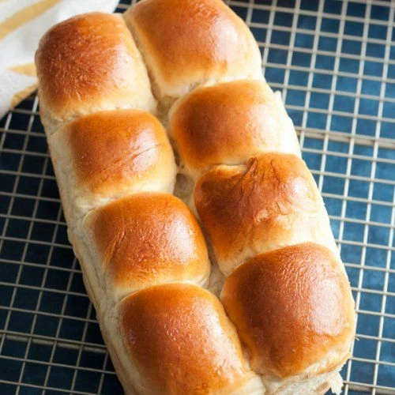
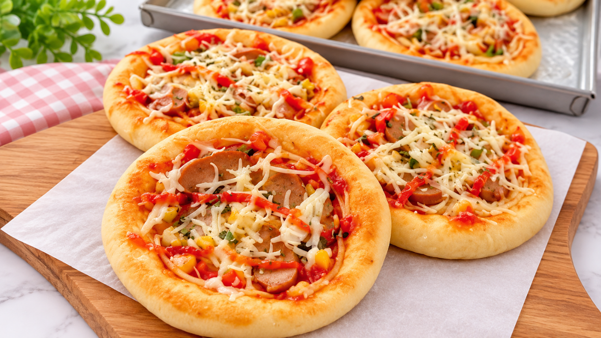
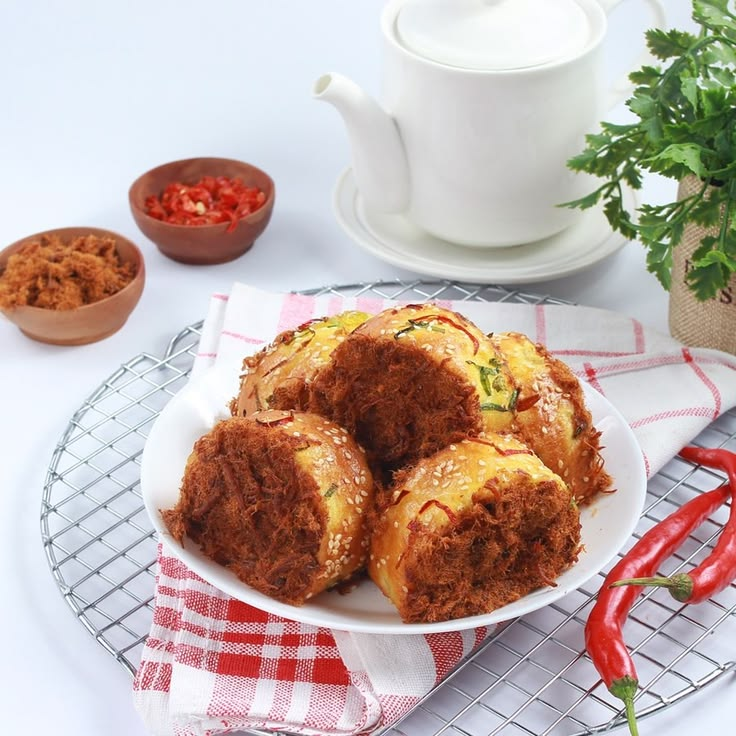
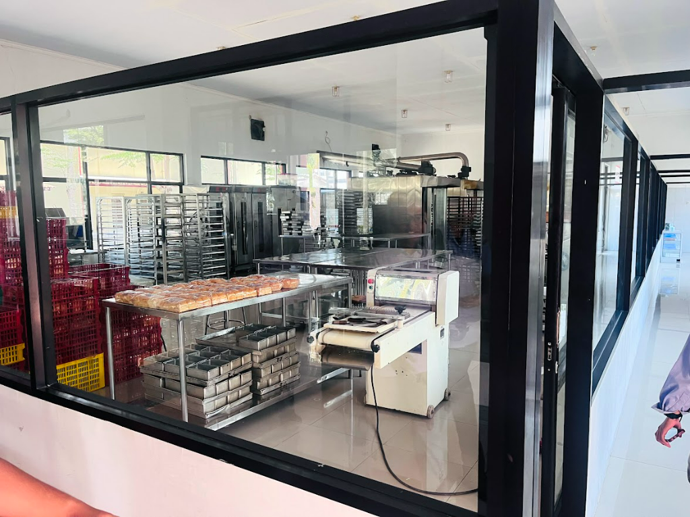

BEST SELLER
Roti Sobek
Roti sobek dengan tekstur lembut dan empuk, memiliki cita rasa lezat yang cocok dinikmati kapan saja.
Rasa Karya merupakan Teaching Factory (TEFA) Bakery & Coffee dari Politeknik Negeri Jember yang menghadirkan beragam produk roti dan olahan bakery berkualitas. Melalui perpaduan kreativitas, pembelajaran, dan praktik secara langsung, TEFA Bakery & Coffee berupaya menyajikan produk yang tidak hanya lezat, tetapi juga dibuat dengan memperhatikan kualitas dan kepuasan pelanggan .

PALING DIMINATI
Setiap produk di TEFA Bakery dikembangkan melalui proses pembelajaran dan standar industri yang ketat. Menggunakan bahan-bahan pilihan berkualitas tinggi, kami mempersembahkan kelezatan terbaik yang lahir dari kreativitas dan dedikasi penuh para siswa.

Roti sobek dengan tekstur lembut dan empuk, memiliki cita rasa lezat yang cocok dinikmati kapan saja.

Roti pizza yang lembut dengan topping gurih dan cita rasa yang lezat.

Roti abon gulung dengan tekstur lembut, dipadukan abon gurih yang kaya rasa di setiap gigitan.
Menikmati Roti dari TEFA Bakary & Coffee Politeknik Negeri Jember
Dari Varian Roti Hingga Macam Minuman Lainnya
Berkarya dalam Rasa dan Inovasi.
Konsistensi Rasa dan Pelayanan Terbaik dari TEFA Bakery & Coffee
DARI DAPUR VOKASI POLIJE
Di TEFA Bakery & Coffee Politeknik Negeri Jember, setiap sajian lahir dari perpaduan pendidikan vokasi dan standar produksi industri nyata. Kami mengolah setiap roti dan seduhan kopi dengan ketelitian tinggi, bahan baku pilihan, serta higienitas terjaga untuk menghadirkan kualitas terbaik bagi Anda.

KEMITRAAN HORECA
Kami menjadi mitra pasokan harian terpercaya bagi 24+ hotel butik, specialty coffee shop, dan restoran terkemuka. Dapatkan kualitas roti segar terjadwal dengan harga korporat kompetitif dan konsistensi kualitas tertinggi.
Konsultasi Pasokan Mitra →